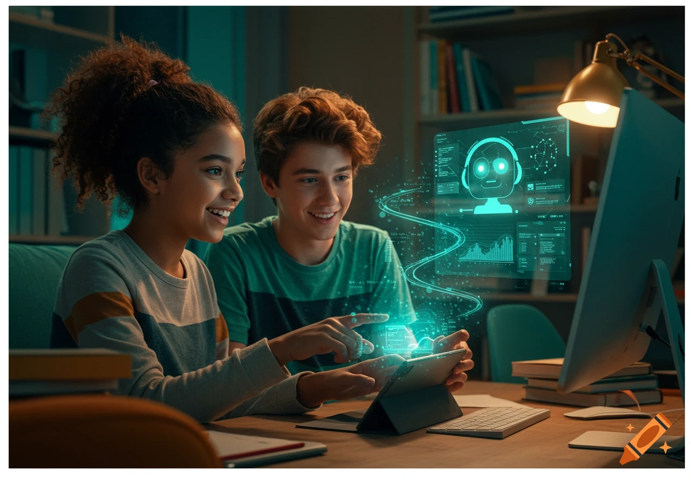

Vitaj!
Tieto stránky vznikli ako metodická podpora pre učiteľov výtvarnej výchovy a pedagógov 2. stupňa základných škôl, ktorí chcú do svojej výučby zaradiť moderné technológie a rozvíjať grafické zručnosti žiakov pomocou nástrojov umelej inteligencie.
Sú určené nielen pre začínajúcich či skúsených učiteľov hľadajúcich nové podnety, ale aj pre rodičov a samotných žiakov, ktorí chcú objavovať kreatívne spôsoby vizuálneho vyjadrovania.

Čo nájdeš na stránke
- Prehľad AI nástrojov vhodných pre výtvarnú a grafickú prácu v škole
- Ukážky žiackych prác – galéria obrázkov vytvorených alebo upravených s pomocou nástrojov
- Tipy na aktivity a odporúčania na AI nástroje, ktoré prepájajú tradičné výtvarné techniky s digitálnymi možnosťami umelej inteligencie
- Kontaktný formulár v prípade otázok či nejasností
Tento priestor je koncipovaný ako otvorená „tvorivá laboratórna zóna“, v ktorej neexistuje jediná správna cesta – podobne ako pri interpretácii umeleckého diela či pri experimentovaní s grafickými technikami.